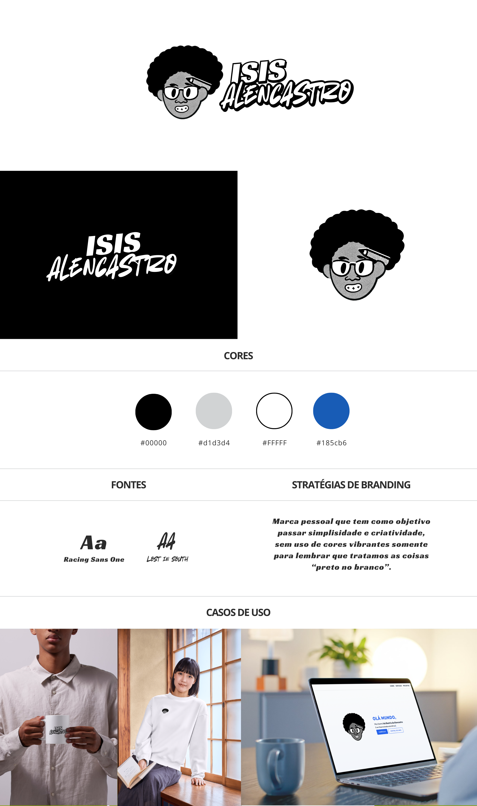

Marca pessoal
Isis Alencastro.
A minha marca pessoal: preto, branco, cinza e um toque de azul, para lembrar que eu trato as coisas preto no branco.

Por que eu fiz
Eu produzo conteúdo, tenho portfólio, currículo e um estúdio. Precisava de uma identidade que fosse minha, separada da IBA, mas que conversasse com ela.
A ideia
Simplicidade e criatividade. Eu escolhi não usar cores vibrantes de propósito: a paleta é preto (#000000), cinza (#D1D3D4) e branco (#FFFFFF), para lembrar que eu trato as coisas preto no branco, com clareza e sem enrolação.
O único respiro de cor é o azul #185CB6, o mesmo da IBA. É o fio que liga a minha marca pessoal ao meu estúdio.
Processo criativo
A tipografia é onde entra a personalidade: Racing Sans One, com cara de movimento e velocidade, e Lost in South, uma letra manuscrita que traz o lado humano. Uma fonte rápida e uma fonte à mão, que é um pouco do que eu sou.
Testei a marca em aplicações reais desde o começo: caneca, camiseta e o próprio portfólio web. Se não funcionasse numa caneca, não ia funcionar em lugar nenhum.
Decisões que eu tomei
- Preto no brancoPaleta neutra como posicionamento, não só como estética.
- Azul compartilhado#185CB6 conecta a marca pessoal com a IBA.
- Contraste tipográficoUma fonte de impacto com uma manuscrita, para equilibrar técnica e pessoa.
O que ficou
Fazer a própria marca é mais difícil do que fazer a de um cliente, porque não tem briefing para culpar. Precisei responder com sinceridade como eu queria ser lembrada.